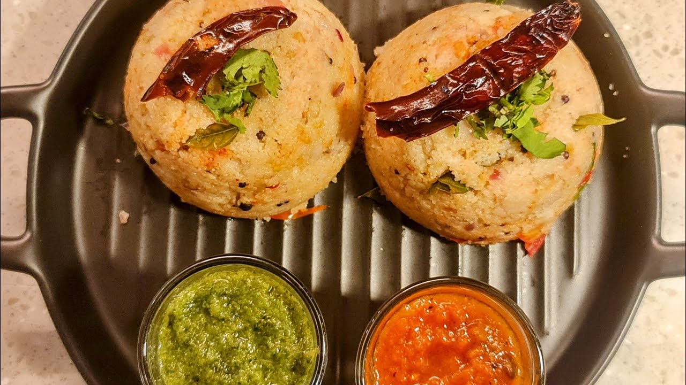

Watch the Video on YouTube
What makes this dish special
Rava Upma is a South Indian dish that is perfect for breakfast or an evening snack. It is a flavorful dish that is simple to make. This recipe is for a basic onion rava upma, but you can add vegetables to make a vegetable version. The peanuts are added at the beginning with the oil so that their flavors are more pronounced. The rava has to be roasted well so that the upma is not sticky. The dish is served with tomato dip and green coriander chutney.
Recipe
Ingredients:
- Rava/sooji: 1 cup
- Onion: 1 medium (finely chopped)
- Tomato: 1 medium (sliced into thin wedges)
- Peanuts: 2 Tbsp
- Split urad: 1 tsp
- Channa daal: 1/2 tsp
- Black mustard seeds: 1 tsp
- Ginger: 1/4 tsp (grated)
- Curry leaves: 7-8 (cut coarsely)
- Whole dry red chilies: 2
- Green chilies: 2-3 (chopped)
- Lemon juice: 1 Tbsp
- Coriander: for garnishing (chopped)
- Oil: 2 Tbsp
- Salt: to taste
- Red chili powder: ½ tsp
- Sugar: ¼ tsp
- Hot water: 3 cups
Instructions:
- In a pan, put 3 cups of water to boil.
- In a kadai, heat the oil. Add the peanuts, once they begin to crackle, add the mustard seeds, dried red chilies and daal, followed by curry leaves, ginger and green chilies.
- Once aromatic, add the onion. Sauté till translucent and add the suji. Roast till you hear a cracking sound.
- Add the hot water, salt, sugar and red chili powder. Mix till the water has just almost dried. Add the lemon juice and tomato wedges.
- Turn flame off. Put a lid and let it rest for at least 15 minutes.
- Serve hot, garnished with chopped coriander along with tomato chutney, green chutney, coconut chutney etc.
Architecture Tip
Drawers are very handy. If you want to increase the efficiency of drawers, use drawer organizers. There are small cloth drawer organizers that are not very expensive. Do not use fixed wooden partitions because that restricts you from using the drawer organizers.